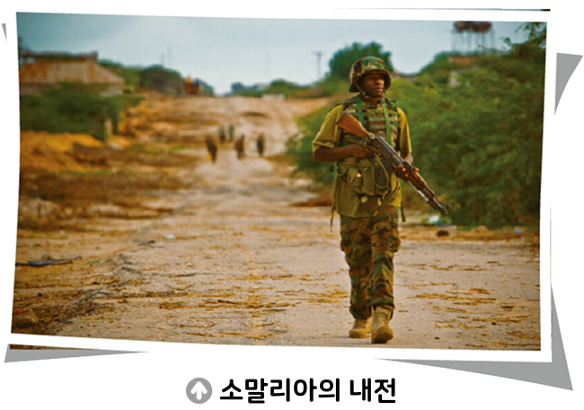

활동하기 사례로 알아보는 국가의 역할
● 다음은 국가가 제대로 역할을 하지 못하는 사례이다. 글을 읽고 물음에 답해 보자.

아프리카의 동북부에 있는 소말리아가 수년째 이어진 내전과 테러, 기근 등으로 급격히 피폐해지고 있다. AP 통신은 8일(현지 시간) 소말리아 수도 모가디슈에 있는 한 카페에서 폭탄 공격으로 최소 6명이 숨졌다고 보도했다. 현지 경찰에 따르면 이날 오후 모가디슈 시내 중심부에 있는 한 카페 앞에서 갑자기 폭발물이 탑재된 차량 한 대가 폭발했다. 이폭발 로 당시 이 카페 야외석에 앉아 있던 손님과 보행자 등 민간인 6명이 사 망하고 10명 이상이 다쳤다.
- 『세계일보』, 2017. 5. 9.
1위 사례에서 국가는 어떤 역할을 하지 못했는지를 써 보자.
내전, 테러, 기근을 막지 못해 시민들이 큰 고통을 받았고, 그 결과 테러로 인해 6명이 사망 하는 등 큰 피해를 입었다. 이는 국가가 국민 을 보호하는 역할을 하지 못한 것이다.
2위 사례의 국가가 해야 하는 가장 중요한 역할은 무엇인지를 써 보자.
나는 국가가 시민을 보호하는 역할을 더 철저하게 해야 한다고 생각한다. 테러를 방지하고, 범죄를 막고, 내전을 종식해야 한다.